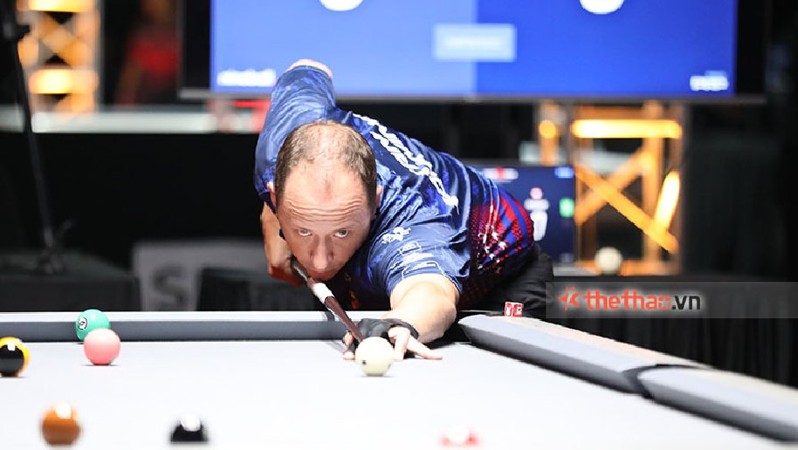

Ta sẽ tìm hiểu luật chơi 9 bi trước tiên, sau đó là 10 bi:
Mục tiêu chính của môn này là ăn được bi 9, và người ăn được bi 9 sẽ giành chiến thắng.
Ở mỗi lượt chơi, người chơi phải đánh trúng viên bi có số thấp nhất trên bàn, nếu trong lượt ăn được bi và có cú đánh hợp lệ thì được bắn tiếp.
Trò chơi bắt đầu bằng 1 cú phá bi, sau đó phụ thuộc vào luật phá bi mà quyết định ai bắn tiếp.
Đa số các luật của 10 bi đều giống 9 bi, chỉ khác ở việc bi quyết định chiến thắng là bi 10 và không có yêu cầu về bếp, tuy nhiên ở mỗi lượt nếu định ăn bi mục tiêu vào lỗ nào thì phải báo lỗ đó trước, nếu ăn bi vào lỗ khác thì phạm lỗi.

